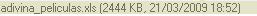
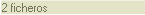

La "Barra de Estado" es un pequeño espacio usado para desplegar información relevante al archivo seleccionado, el número total de archivos en la carpeta, etc. Se puede encontrar al final de la interface de CKFinder
Si un archivo es seleccionado en CKFinder, la barra de estado desplegará información detallada acerca de ese archivo en particular, contendrá el nombre del archivo, su tamaño y la fecha de su última modificación, por ejemplo:

Si ningún archivo está seleccionado por el contrario, el número total de archivos en la carpeta actual será mostrado. Por ejemplo:
